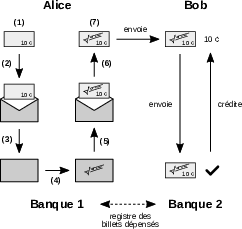

6 Cryptocurrency Before Nakamoto
La cryptocurrency is a form of money that relies entirely on a computer network connected to the Internet. It is defined within this network and is transferred through it. It is a currency native to cyberspace—the new realm created by the rise of the Internet—conceived as a separate jurisdiction from the physical world.
A more specific type of cryptocurrency is digital cash, which replicates the properties of physical cash in cyberspace. However, although this concept dates back to the very emergence of the Internet, it could not immediately come to fruition due to technical and conceptual limitations. Digital cash has been the subject of a genuine quest, involving many individuals eager to use the Internet to create a new economic paradigm, including the cypherpunks.
Bitcoin is the outcome of this quest. It didn’t emerge out of nowhere; it is the result of reflections, research, and various experiments. Satoshi Nakamoto’s discovery thus represents a breakthrough in a pre-existing field.
Monetary Exchange on the Internet
The Internet has generalized the sharing of information and, in doing so, has created a new space for human interactions: cyberspace. The emergence of this space naturally led to a demand for monetary exchange, which manifested through the development of e-commerce in the 1990s. As Robert Hettinga aptly summarized in 1998:
“Since the invention of the telegraph, settling financial transactions has faced a problem: how to conduct business at a distance when the simplest way to execute, clear, and settle a transaction is through the exchange of bearer certificates1.”
1 Robert A. Hettinga, Digital Bearer Settlement, April 1998: http://www.systemics.com/legal/digigold/discovery/postings/Geoecon.pdf.
2 The term “credit card” was used in 1888 by Edward Bellamy, an American socialist writer and journalist and a forerunner of the technocracy movement, in his speculative fiction novel Looking Backward, to describe the payment card used by citizens in his envisioned utopia. This type of card later developed in the 1920s–1930s in the U.S. through cards issued independently by Western Union, department stores, oil companies, and airlines.
3 For the origins of the Visa network, see David L. Stearns, Electronic Value Exchange: Origins of the VISA Electronic Payment System, Springer, 2011. The book’s title references Dee Hock’s ambitious project (Visa’s founder) to create an Electronic Value Exchange (EVE) protocol allowing all transactions to be conducted electronically, leading to “the genesis of a new form of global currency.”
The initial solution was to use bank credit. The use of bank credit as a medium of exchange had gradually become widespread in the West with the banking of society. Over time, a technical solution prevailed: the payment card, also called a debit or credit card depending on its operation. This solution wasn’t particularly innovative2, but it became considerably popular from the 1960s onward, through bank adoption and the formation of companies specializing in electronic funds transfer like NBI/Visa and Interbank/MasterCard3.
However, payment by bank card wasn’t necessarily suited to cyberspace, as it was difficult to implement, costly, and not very secure at the time. This is why various technical solutions for making payments on the Internet emerged in the mid-1990s, such as CyberCash, First Virtual, or Open Market. Micropayment systems also appeared, like CyberCoin (managed by CyberCash), NetBill, and MilliCent.
These systems eventually failed, but it was in this niche that the PayPal service developed from 1999. It was designed to be easily accessible (PayPal literally means “pay friend”): it allowed easy, fee-free payments between email addresses. Its business model was based on collecting interest from holding clients’ funds in banks, to cover operating costs and remunerate shareholders. It was, therefore, a third-layer service built on top of the banking system, itself based on the central monetary system4.
4 For the history of PayPal’s early days, see Eric M. Jackson, The PayPal Wars: Battles With eBay, the Media, the Mafia, and the Rest of Planet Earth, World Ahead Pub., 2012.
Despite the good intentions of their creators, these systems were entirely at the mercy of regulators. Those that survived consequently engaged in surveillance and censorship at an unprecedented level.
The second solution for exchanging value on the Internet was to issue a new digital currency in a centralized manner, possibly backed by an existing currency. This approach involved acting without seeking permission, exploiting the legal gray areas that could exist in a relatively new field.
Massively multiplayer online games, including the famous MMORPGs, contributed to instilling the idea of an independent digital currency in people’s minds. Examples include the Token, the native currency of Habitat, one of the first graphical MMORPGs developed in 1985 by Lucasfilm Games for the Commodore 64. Other examples are the precious metal coins in EverQuest in 1999, the Linden dollar of Second Life in 2003, or the gold in World of Warcraft in 2004. All these cases demonstrated that a real economy could emerge from a virtual currency.
An anecdotal example of this type of digital currency system was the Hawthorne Exchange, launched on March 24, 1993, on the extropian mailing list by an individual named Brian Holt Hawthorne. It was a reputation market for list members, where the unit of account used for exchange was the Thorne. The system wasn’t very accessible or robust, but extropians used it and gave value to the Thorne in anticipation of the future. Some exchanges for dollars and services took place between list members. However, the Hawthorne Exchange was merely an experiment; the Thorne wasn’t intended to be a real currency, and its creator decided to stop it in ’94.
A much more serious system appeared in 1996: e-gold. As described in Chapter 4, it was a digital gold currency model whose unit of account was theoretically backed by gold. The system relied on the company Gold & Silver Reserve Inc. founded by Douglas Jackson, which stored the physical gold in its vaults. It enjoyed great success in the 2000s before being shut down in 2007 by the Secret Service.
However, the problem with this type of currency was that it still depended on an entity that constituted a single point of failure. Thus, even if those managing it were well-intentioned, such a system wasn’t robust and couldn’t endure in the long term.
The third solution for cryptocurrency was the conception of electronic cash that was confidential, uncontrolled, and decentralized. The idea was to minimize the role of the trusted third party as much as possible so that the currency would closely resemble physical cash in terms of minimizing required trust. Ideally, the goal was to obtain a “digital gold” that was “unforgeable, inflation-free, and untraceable5.”
5 Hadon Nash, Digital gold, August 24, 1993, 20:23:30 UTC: https://cypherpunks.venona.com/date/1993/08/msg00698.html.
The cypherpunks considered this type of digital currency essential in their fight for freedom and privacy. They planned to use such a unit of account in their projects, as evidenced by the Cryptocredits of BlackNet or the mojo of Mojo Nation. Naturally, they sought to develop such a currency.
However, designing electronic cash—a true cryptocurrency—was no easy task. The quest to achieve it took many years to bear fruit. And the first step in this quest was the emergence of eCash, which had the merit of presenting a coherent proposal that met the cypherpunks’ requirements.
eCash: Chaumian Electronic Cash
eCash is a concept of confidential digital currency designed by cryptographer David Chaum in the 1980s and implemented during the 1990s. Initially described by Chaum in 1982, it was highlighted in 1985 in his article titled “Security without Identification,” which promised to “render Big Brother obsolete6.” The model is based on the mechanism of blind signatures, which guarantees ownership of the currency and transaction anonymity.
6 David L. Chaum, “Security without identification: transaction systems to make big brother obsolete”, in Communications of the ACM, vol. 28, no. 10, October 1985, pp. 1030–1044: https://www.cs.ru.nl/~jhh/pub/secsem/chaum1985bigbrother.pdf.
The eCash model manages digital banknotes of various denominations that users can hold. The banknotes are issued and replaced by servers called banks or mints. When a banknote is transferred, the recipient sends it to their bank, which verifies it and gives them another in return. The banks in the system each maintain a ledger of spent banknotes to prevent double-spending. The system is overseen by a central authority that issues the necessary permissions.
Issuing a digital banknote uses the blind signature mechanism, as mentioned. For the user, it essentially involves choosing a large number and having it signed by their bank, so that this number remains known only to them. The functioning of this mathematical process is analogous to signing a physical banknote using carbon paper that represents a specific amount of monetary units (denomination). Here’s how Alice creates a banknote:
- Alice creates a banknote using carbon paper (by randomly generating a very large number ( x ));
- Alice places the banknote in a sealed envelope (using a commutative function ( c ) known only to her);
- Alice sends the envelope containing her banknote to the bank and specifies the desired denomination;
- The bank signs the envelope, indicating the amount the banknote represents (the bank has a private key for each denomination), effectively signing the carbon paper banknote inside;
- The bank returns the envelope to Alice;
- Alice opens the envelope to retrieve her signed banknote (using the inverse function ( c’ ));
- Alice verifies that the bank’s signature is authentic (by checking it against the bank’s public key associated with the requested denomination).
Transferring the signed banknote is done by giving it to someone else. Thus, when Alice pays Bob for a service, the steps are as follows: first, Alice transmits the banknote to Bob; then, Bob verifies that it has been signed by Alice’s bank; next, he promptly sends the received banknote to his bank; finally, Bob’s bank checks that the banknote hasn’t already been used and, if valid, signs a new banknote of the same denomination to give to Bob.

Digital banknotes can be issued on their own, forming a base currency. But they can also be backed by another currency like the dollar. In this case, the user can return their banknotes to their bank at any time to retrieve the corresponding amount.
The main consequence of this procedure is that none of the banks in the system can link the payment to Alice’s identity. Alice’s bank knows that a banknote it signed has been spent, but it cannot know for certain that it belonged to Alice. Bob’s bank knows that Bob received the payment and that it comes from Alice’s bank, but nothing more. This is why eCash can be considered a privacy-respecting model.
However, the system’s confidentiality relies on a strong assumption: the benevolence of the system’s banks. Indeed, if a bank wanted to obtain information related to a particular banknote (e.g., under state pressure), it could request it from its owner in exchange for authorizing the transfer. One can imagine an eCash system that fully complies with surveillance standards, as suggested by Chaum’s implementation for a CBDC conceptualized in 20217.
7 David L. Chaum, Christian Grothoff, Thomas Moser, How to Issue a Central Bank Digital Currency, March 2021: https://www.snb.ch/n/mmr/reference/working_paper_2021_03/source/working_paper_2021_03.n.pdf.
Magic Money, CyberBucks, and the Banks
The concept of eCash was implemented during the 1990s. At the time, the Web had just emerged, e-commerce was non-existent, and this idea represented a tremendous opportunity. This implementation was first undertaken by the cypherpunks through the Magic Money protocol, then by David Chaum’s company, DigiCash, using test tokens called CyberBucks and deploying within the traditional banking system.
The Magic Money protocol was introduced on the cypherpunks mailing list on February 4, 1994, by an anonymous developer known as Pr0duct Cypher, who used PGP for identification. Magic Money allowed users to create their own currency by running an email server that acted as an eCash mint8. Magic Money used the RSA algorithm and blind signatures, two techniques patented at the time, making its deployment de facto illegal and confined to experimentation. Nonetheless, the announcement was well-received on the list, notably by Hal Finney.
8 “Magic Money is a digital cash system designed to be used via email. The system is online and untraceable. ‘Online’ means each transaction involves an exchange with a server to prevent double-spending. ‘Untraceable’ means it’s impossible for anyone to trace transactions, match a withdrawal with a deposit, or match two coins in any way.” — Pr0duct Cypher, Magic Money Digicash System, February 4, 1994, 20:44:27 UTC: https://cypherpunks.venona.com/date/1994/02/msg00247.html.
9 Timothy C. May, Why Digital Cash is Not Being Used, May 3, 1994, 19:48:18 UTC: https://cypherpunks.venona.com/date/1994/05/msg00155.html.
The first system based on Magic Money was launched by Mike Duvos a few weeks later with the Tacky Tokens, whose coins were issued in denominations of 1, 2, 5, 10, 20, 50, and 100 units. Despite proposals, no real transactions occurred, prompting Tim May to wonder “why digital cash [was] not being used9.” Other fanciful implementations of Magic Money followed, such as GhostMarks, DigiFrancs, or NexusBucks, but none achieved greater success. Activity quickly dwindled over the weeks.
The concept of eCash was then put into practice by DigiCash B.V., a company founded by David Chaum in 1990 and based in Amsterdam, whose mission was to implement the cryptographer’s ideas. Several cypherpunks worked for the company, including Eric Hughes, Bryce Wilcox (the future Zooko Wilcox-O’Hearn), and Nick Szabo. After a few years of development, a prototype was presented in May 1994 at the first International World Wide Web Conference at CERN in Geneva.
DigiCash then conducted a trial starting on October 19 of that year, issuing CyberBucks. Although their name references the U.S. dollar (“a buck”), they weren’t backed by the dollar and thus had a floating price relative to it. An initial distribution of 100 CyberBucks per new user was carried out to help bootstrap the system. The cypherpunks adopted the currency, engaging in real exchanges: rewarding problem-solving, selling T-shirts, selling software, and, of course, exchanging for dollars10. Various merchants accepted CyberBucks as part of this experiment.
10 Jim Crawley, “Electronic Cash,” The Computists’ Weekly, vol. 5, no. 25, July 11, 1995: https://www.nzdl.org/cgi-bin/library?e=d-00000-00---off-0tcc--00-0----0-10-0---0---0direct-10---4-------0-1l--11-ro-50---20-preferences---10-0-1-00-0--4----0-0-11-10-0utfZz-8-00&a=d&cl=CL2.5&d=HASH0199d48acda6ba6861de2d9e.2.
11 “Mark Twain came onto the market with real digital cash, and people completely stopped trading the beta certificates. I don’t even remember the last settlement price, but it was a few cents on the dollar.” — Robert Hettinga, e$: Interbank Digital Cash Clearing, Better Living through Walletware, Microintermediation, Net.Currencies and ECM, June 3, 1996, archive: https://web.archive.org/web/19980204144728/http://www.shipwright.com/rants/rant_14.html.
However, CyberBucks were merely a test currency, and they declined in October 1995 when the Mark Twain Bank, a small Missouri bank, launched its own version of the protocol in partnership with DigiCash. Unlike the previous trial, the unit exchanged was backed by the U.S. dollar. Although the CyberBucks experiment didn’t technically end there, their value collapsed due to this development11.
Subsequently, DigiCash formed partnerships with various banks to integrate into the traditional financial sector. Between 1996 and 1998, six banks around the world followed Mark Twain Bank: Merita Bank in Finland, Deutsche Bank in Germany, Advance Bank in Australia, Bank Austria in Austria, Den norske Bank in Norway, and Credit Suisse in Switzerland. The company was then promised a bright future12.
12 Antoine Champagne, “Digital cash (cryptocurrency) was born in 1995: memories”, Reflets.info, January 11, 2014: https://reflets.info/articles/l-argent-liquide-numerique-crypto-curency-est-ne-en-1995-souvenirs.
13 “Hoe DigiCash alles verknalde”, Next! Magazine, January 1, 1999, archive: https://web.archive.org/web/19990427142412/https://www.nextmagazine.nl/ecash.htm. An English translation is available at https://cryptome.org/jya/digicrash.htm.
However, this didn’t account for David Chaum’s character—stubborn, suspicious, and intent on retaining control of his company13. He refused partnerships with major players like ING and ABN AMRO (two of the three largest Dutch banks at the time), Visa, Netscape, and Microsoft. Eventually, under pressure from shareholders and employees, he stepped down as CEO to become Chief Technical Officer, handing over to Michael Nash, a former Visa employee, in 1997. DigiCash’s headquarters were moved to California, effectively making it a U.S. company.
On September 17, 1998, Mark Twain Bank (acquired by Mercantile Bancorporation in 1996) announced it was abandoning eCash, leading to DigiCash’s demise. On November 3, the company filed for bankruptcy under Chapter 11 in the U.S., resulting in its assets being gradually sold off over the years, including its patents in 2002. With DigiCash, the very concept of eCash disappeared from circulation.
In 1999, Chaum explained the reasons for his company’s failure, namely the lack of adoption due to user difficulty. This disappearance gradually allowed payment cards and PayPal to prevail.
Thus, the end of DigiCash left a void in the digital cash market. But the demand never vanished, suggesting it would re-emerge in one form or another. As Milton Friedman, Nobel Prize-winning economist and founder of the Chicago School, predicted in 1999 to the National Taxpayers Union Foundation:
“I think that the Internet is going to be one of the major forces for reducing the role of government. The one thing that’s missing but that will soon be developed is a reliable e-cash—a method whereby on the Internet you can transfer funds from A to B without A knowing B or B knowing A14.”
14 Milton Friedman, Milton Friedman Full Interview on Anti-Trust and Tech (video), 1999: https://www.youtube.com/watch?v=mlwxdyLnMXM, 14:32.
libtech-l: Revolutionizing Money
After the failure of eCash in October 1998, the idea of real electronic cash was gradually abandoned by most cypherpunks, who settled for private currency experiments and existing payment systems. But not all members of the movement shared this view. A small group gathered on a private mailing list called libtech-l, where they discussed how money might evolve.
The libtech-l list, created in 1994 by Nick Szabo15, was intended to host discussions on liberating technologies capable of protecting individual freedom against authority, in the spirit of the extropian and cypherpunk movements, whose members also participated. Notably, contributions came from cypherpunks Wei Dai and Hal Finney, as well as economists Larry White and George Selgin. These five formed the core of this private list, from which several digital currency ideas would emerge.
15 libtech-l@netcom.com — Timothy C. May, Re: Regional Lists, June 28, 1994, 05:48:50 UTC: https://cypherpunks.venona.com/date/1994/06/msg01156.html; Timothy C. May, Cyphernomicon, 2.4.27.
16 Nick Szabo, Smart Contracts, 1994, archive: https://web.archive.org/web/20011102030833/http://szabo.best.vwh.net:80/smart.contracts.html.
Nicholas J. Szabo, known as Nick Szabo, was an American computer scientist of Hungarian descent. An extropian and later a cypherpunk, he notably distinguished himself through his involvement in the fight against the Clipper chip. In 1994, he formalized the notion of the smart contract, which he defined as “a computerized transaction protocol that executes the terms of a contract16,” and he elaborated on it in subsequent years.
Nick Szabo had a curious and eclectic personality, interested in numerous fields such as computer science, economics, politics, and biology, and wrote prolifically on these topics17. He had a particular interest in law, holding a liberal and natural-law perspective, which later led him to return to study and obtain a degree in the discipline in 2006.
17 Nick Szabo’s writings are available on his old personal page szabo.best.vwh.net and his blog Unenumerated, started in 2005. — Archive of personal page: https://web.archive.org/web/20160709091851/http://szabo.best.vwh.net/; Unenumerated: https://unenumerated.blogspot.com/.
18 Nick Szabo, Trusted Third Parties are Security Holes, 2001, archive: https://web.archive.org/web/20020423191203/http://szabo.best.vwh.net/ttps.html.
He worked for six months as a consultant for DigiCash in Amsterdam around 1995, where he learned about the detrimental (and ultimately fatal) role of trusted third parties. This experience fueled his obsession with minimizing trust, a theme he emphasized in his work18.
Hal Finney, as mentioned in the previous chapter, was a computer scientist and cryptographer living in the Los Angeles area. An early extropian and cypherpunk, he worked for Phil Zimmermann on the development of PGP—unofficially since 1992, then officially from 1996. Hal Finney was also passionate about David Chaum’s ideas, including his famous eCash19.
19 “When I discovered Chaum’s work, I was blown away. The first article I found, I believe, was his article in CACM, which gave an overview of many possibilities. I started trying to find other articles by Chaum. All the techniques necessary to make Vinge’s world work were there, techniques that Vinge apparently already knew well before me.” — Hal Finney, Why remailers…, November 16, 1992, 01:30:02 UTC: https://cypherpunks.venona.com/date/1992/11/msg00108.html.
20 Wei Dai, b-money, November 26, 1998, 23:33:49 UTC, archive: https://web.archive.org/web/19990219124653/http://www.eskimo.com/~weidai/bmoney.txt.
Wei Dai was a young Chinese-American cryptographer living in Seattle. Having fled communist China and emigrated to the U.S. with his parents at age 10, he made his way into the professional world and was quickly hired by Microsoft, where he contributed to several patents. He discovered the cypherpunk movement in 1994 and joined it. The young prodigy contributed to cryptography, notably with Crypto++, a library of cryptographic functions in C++, and Pipenet, an anonymous communication protocol. He became interested in digital currencies and autonomous contracts from 1995, conceptualizing a model of anonymous credit in 1997. In 1998, Wei Dai stated he was “fascinated by Tim May’s crypto-anarchy,” where “the State [was] not temporarily destroyed but permanently forbidden and unnecessary,” and where “violence [was] impossible because its participants [could not] be linked to their true names or physical locations20.”
Lawrence H. White, known as Larry White, and George A. Selgin were economists trained at prestigious universities. Both were inspired by the ideas of the Austrian School of Economics without fully adhering to it. Influenced by Friedrich Hayek’s works, notably his 1976 book The Denationalization of Money, which advocated for absolute competition in monetary and banking sectors, they endeavored from the 1980s to promote free banking systems where private currencies could be freely issued by financial companies, leading to market equilibrium.
These individuals on the libtech-l list sought to improve money. Having witnessed DigiCash’s fall and eCash’s failure, they were aware of the issues related to trusted third parties. Thus, Wei Dai, Nick Szabo, and Hal Finney each developed their own digital currency concepts: Wei Dai proposed b-money, Nick Szabo devised a model named bit gold, and Hal Finney built the RPOW system.
Their projects were based on the notion of proof of work, a concept implemented in 1997 by Adam Back with his Hashcash algorithm, initially intended to combat spam emails21. The British cypherpunk had considered making it the basis of a digital currency but recognized that such proofs of work couldn’t be transferred in a fully distributed manner (due to the double-spending problem), necessitating mint systems like eCash22.
21 For a technical explanation of proof of work, refer to the dedicated section in Chapter 8.
22 Adam Back, Re: Bypassing the Digicash Patents, April 30, 1997, 09:09:37 UTC: https://cypherpunks.venona.com/date/1997/04/msg00822.html.
The idea of using proof of work as a currency basis was widespread. For instance, in 1996, Ronald Rivest and Adi Shamir described MicroMint, a centralized micropayment system whose coins were meant to be unforgeable thanks to proof of work production. But what was lacking was a well-structured system to bring it to life robustly and sustainably.
The b-money Concept
The first digital currency concept to emerge from the libtech-l list was b-money, proposed by Wei Dai. It was a decentralized protocol concept managing a unit of account of the same name, b-money, whose value was supposed to follow a basket of goods.
Wei Dai worked on his idea starting in 1995. As he later explained, his motivation was to “make possible the establishment of an online economy that is purely voluntary, an economy that cannot be taxed or regulated through the threat of violence23.”
23 Morgen E. Peck, “Bitcoin: The Cryptoanarchists’ Answer to Cash”, IEEE Spectrum, May 30, 2012: https://spectrum.ieee.org/bitcoin-the-cryptoanarchists-answer-to-cash.
24 Wei Dai, PipeNet 1.1 and b-money, November 26, 1998, 23:33:49 UTC: https://cypherpunks.venona.com/date/1998/11/msg00941.html.
Wei Dai published the descriptive text of b-money on November 26, 1998, on his personal page. He shared the link with the cypherpunks mailing list in an email where he described b-money as “a new protocol for enabling untraceable pseudonymous entities to cooperate with each other more efficiently […] a proposal for an anonymous, distributed electronic cash system24.”
The text was brief (just over 1,000 words) but conceptually rich. Wei Dai described two versions of the protocol: one was unrealizable but simple; the other was more complex but based on more realistic assumptions.
In the first version, each participant was part of an untraceable peer-to-peer network. Each was identified by a “digital pseudonym” (i.e., a public key), and each transactional message was signed by the sender and encrypted for the recipient. Everyone maintained a separate database recording how many units of b-money each pseudonym possessed.
Monetary creation was open to all participants and was done through proof of work by broadcasting the solution to a known, previously unsolved computational problem. The number of units created depended on the cost of this effort expressed relative to a standard basket of goods, potentially including precious metals: when its price relative to the basket increased, economic actors deployed more computing power to supply the market; conversely, when its price fell, they were incentivized to use less computing power, slowing b-money production. It was essentially a decentralized “stablecoin” before its time25.
25 This mechanism to ensure b-money’s stability is reminiscent of the stablecoin managed by MakerDAO on Ethereum, aptly named dai! Later, Wei Dai criticized Bitcoin’s fixed monetary policy, arguing it would lead to “high price volatility imposing significant costs on its users.” — Wei Dai, Re: Bitcoins are not digital greenbacks, April 20, 2013, 07:56 UTC: https://www.lesswrong.com/posts/P9jggxRZTMJcjnaPw/bitcoins-are-not-digital-greenbacks?commentId=3XvTroRzb23NpHQDc.
The system also offered the ability to create and execute contracts directly on the network through a rudimentary escrow process. In a contract, the involved parties were required to stake a bond and designate an arbitrator to intervene in case of disputes. Failing an amicable resolution, the network would decide based on the broadcasted evidence, theoretically favoring the arbitrator’s position.
In the second version, the property ledger was no longer maintained by everyone but by a subset of participants called servers. Participants in a transaction had to verify that their transaction was processed by sending requests to a random sample of servers. Since some trust in these servers was necessary, an economic proof-of-stake mechanism was established to ensure their honesty. Each server had to deposit an amount of b-money in a special account to be penalized in case of misconduct and was required to regularly publish its monetary creation and ledger.
Wei Dai’s b-money concept was quite ingenious for its time. However, it wasn’t functional and had major flaws. First, the first protocol version was impossible to implement on a large scale, notably because it couldn’t resist excessive multiplication of identities (Sybil attack), as anyone could easily add new computers to the network. Second, the second version seemed more realistic but effectively centralized the system into a small number of servers, making it more vulnerable to attacks and corruption. Finally, stability relative to a basket of goods would have required what’s now called a decentralized oracle system, a complex problem to solve26.
26 Satoshi himself considered the oracle problem. In February 2009, he wrote: “Indeed, there is nobody to act as central bank or Federal Reserve to adjust the money supply as the number of users grows. That would have required a trusted party to determine value because I don’t know how software could know the real-world value of things. If there was some clever way, or if we wanted to trust someone to actively manage the money supply to peg it to something, the rules could have been programmed for that.” — Satoshi Nakamoto, Re: Bitcoin open source implementation of P2P currency, February 18, 2009: https://p2pfoundation.ning.com/forum/topics/bitcoin-open-source?commentId=2003008%3AComment%3A9562.
b-money attracted the attention of cypherpunks, particularly Adam Back. Nevertheless, Wei Dai never implemented his model, not only because it was dysfunctional but also due to his disillusionment with crypto-anarchy. As he stated in 2014:
“I didn’t take any steps to code b-money. Partly because b-money wasn’t yet a fully practical design. But the main reason I didn’t continue working on this idea was that I became disillusioned with crypto-anarchy around that time, and didn’t think such a system, once implemented, could really get enough traction27.”
27 Wei Dai, Re: AALWA: Ask any LessWronger anything, March 15, 2014, 20:34 UTC: https://www.lesswrong.com/posts/YdfpDyRpNyypivgdu/aalwa-ask-any-lesswronger-anything?commentId=XKwphuwm366RegQ3d.
The bit gold Model
The second model to emerge from the libtech-l list was the bit gold system. It was intended to manage the creation and exchange of a virtual resource called bit gold. Unlike e-gold, which was backed by physical gold, or b-money theoretically indexed to a basket of goods, bit gold wasn’t to be backed by any other asset but to possess intrinsic, unfalsifiable scarcity, thus constituting a purely digital gold.
In 1998, Nick Szabo developed his idea of bit gold, initially describing it on libtech-l before hosting a draft white paper in 1999 on his personal website28. He publicly introduced bit gold in December 2005 in a blog post on Unenumerated29. The logic behind bit gold was to minimize trust to replicate, as much as possible, the costly production of precious metals in cyberspace.
28 Nick Szabo, Bit Gold: Towards Trust-Independent Digital Money, 2005, archive: https://web.archive.org/web/20140406003811/http://szabo.best.vwh.net/bitgold.html.
29 Nick Szabo, Bit gold, December 29, 2005: https://unenumerated.blogspot.com/2005/12/bit-gold.html.
30 In bit gold, computing the proof of work didn’t involve the partial inversion of a hash function (as in Hashcash) but a “secure benchmark function” that measured the problem’s difficulty on a specific machine. This aimed to approximate the energy level used. — See Nick Szabo, Intrapolynomial Cryptography, 1999, archive: https://web.archive.org/web/20011217091748/http://szabo.best.vwh.net/intrapoly.html.
The protocol’s central element was that monetary creation occurred through proof of work: pieces of bit gold were created using computing power30. Each solution was calculated from the previous one, forming a chain of proofs of work. Szabo referred to the actors responsible for this production as “miners.”
The date and time of these proofs of work were certified using multiple timestamp servers. This diversity, though not entirely satisfactory, aimed to limit the risk associated with any particular service.
Ownership and exchanges were secured through a public registry of property titles. Users were identified by their public keys and signed transactions with their private keys. The registry was verified and maintained by a network of servers called the “property club,” which agreed upon the state using a consensus algorithm: Malkhi and Reiter’s Byzantine Quorum System. This allowed anyone to reference the registry to determine the owner of a piece of bit gold.
Interestingly, the three core components of bit gold—the proofs of work, their timestamps, and the property registry—were separate. They were managed by different actors: miners, timestamp servers, and property club members. Later, in Bitcoin, these three elements would be combined into a single concept: the blockchain.
Despite aiming to minimize trust, Szabo’s system had conceptual problems. First, the way the pieces of bit gold were produced made them non-fungible—they couldn’t be mixed together and had to be individually valued on a market to serve as a basis for a uniform unit of account. Second, bit gold relied on centralized timestamp servers, representing significant single points of failure. Finally, the system depended on a “classical” consensus algorithm that required property club members to be pre-selected, known to all, and that 66% of them behaved correctly.
At the time, bit gold was envisioned as a settlement system managing a rare reserve currency, upon which a free banking economy might be built, possibly using the Chaumian model. Nick Szabo pondered how to implement his idea for some time, even seeking help in April 2008 in a blog comment31. Szabo never implemented his concept, unlike Hal Finney, who attempted to do so with his RPOW system.
31 “[Bit gold] would greatly benefit from a demo, an experimental market (with, e.g., a trusted third party substituting for the complex security needed in the real system). Anyone want to help me code one up?” — Nick Szabo, Re: Bit gold markets, April 10, 2008, archive: https://web.archive.org/web/20171227190431/http://unenumerated.blogspot.com/2008/04/bit-gold-markets.html?showComment=1207799580000#c3741843833998921269.
The RPOW System
Hal Finney took Nick Szabo’s concept and simplified it to implement it in a novel system: Reusable Proofs of Work (RPOW), which he described on August 15, 2004. This system was based on a transparent server that allowed the proofs of work produced by Hashcash to be transferable. Thus, the security model didn’t stem from a distributed network as in b-money and bit gold32.
32 See Hal Finney, RPOW Theory, August 15, 2004, archive: https://web.archive.org/web/20040815154951/http://rpow.net/theory.html.
In this system, RPOW tokens were managed by a server that signed them using RSA encryption. They were created by producing a proof of work via Hashcash or from a previous RPOW token. Each RPOW token comprised a value (defined as a power of 2) and data related to the server’s signature. Users could verify the token’s integrity themselves.
The RPOW system relied on a central server responsible for destroying and recreating proofs of work involved in each operation, notably verifying they weren’t double-spent. To ensure divisibility, the system allowed splitting an RPOW into multiple tokens of lesser value and combining multiple RPOWs into one.
When making a payment, the sender gave their RPOW tokens to the recipient, who promptly communicated with the server to receive one or more new tokens totaling the input value. This operation of RPOWs was similar to digital banknotes in eCash: RPOW tokens depended on their contained information and could be transferred confidentially, but each transaction required interacting with the server to guarantee against double-spending.
The security model relied on the nature of the server: a “transparent server33” using the IBM 4758 Secure Cryptographic Coprocessor, a high-security cryptoprocessor resistant to tampering, allowing users to verify the programs running on the machine through an authentication process designed by IBM. This enabled external users to ensure at any time that the RPOW server was running the correct program, whose code was publicly available.
33 Hal Finney, RPOW Security, August 15, 2004, archive: https://web.archive.org/web/20040815154806/http://rpow.net/security.html.
With his RPOW system, Hal Finney aimed to reduce required trust to a minimum. The system was confidential in that users never had to identify themselves to the server and could communicate securely. The server’s transparency allowed users to assure themselves the system wasn’t corrupted. In particular, it was reasonable to assume that the amount of RPOW tokens depended on actual proof-of-work production, allowing RPOW tokens to be equated with gold. In essence, it was a partial implementation of Nick Szabo’s bit gold.
The system was launched on the same day as its description, August 15, 2004. Hal Finney announced it on the cypherpunks mailing list, and the announcement was relayed on the Metzdowd.com list by Robert Hettinga. The system was updated several times to improve its functionality and remained operational for months.
Hal Finney presented his system at CodeCon 2005 in San Francisco. He discussed potential uses for RPOW, including value transfer, spam regulation (following Hashcash’s lineage), commerce in video games, online gambling like poker, and preventing freeloading on file-sharing protocols like BitTorrent34. Ever optimistic, Hal Finney envisioned a promising future for RPOW and planned to increase the number of servers worldwide once initial deployment was complete.
34 Hal Finney, Reusable Proofs of Work, February 1, 2005, archive: https://web.archive.org/web/20050204193327/http://rpow.net/slides/slide001.html.
However, RPOW had intrinsic flaws that might explain why it didn’t achieve the expected success. The major drawback was its security model, which showed weakness: the server(s) had to be known and could be easily shut down, representing single points of failure. Additionally, its monetary policy, while theoretically viable, wasn’t particularly attractive due to the exponential growth in computing performance.
Consequently, actual use of RPOW was minimal. The system was far from perfect and couldn’t, evidently, become a robust monetary system. Nonetheless, it served as an experimental proof of concept, four years before Bitcoin.
The Ripple Project
The cypherpunks weren’t the only ones attempting to build distributed systems for monetary exchange. Canadian developer Ryan Fugger, in 2004, designed a distributed credit protocol called Ripple. This protocol was inspired by the local exchange trading system (LETS) conceived by Michael Linton in the 1980s. Fugger himself participated in such a system in Vancouver before developing Ripple. His invention was thus a product of monetary localism.
Ryan Fugger published the Ripple white paper in 200435. The concept was based on the idea that money essentially consisted of IOUs—credit.
35 Ryan Fugger, Money as IOUs in Social Trust Networks & A Proposal for a Decentralized Currency Network Protocol, version 2, April 18, 2004, archive: https://web.archive.org/web/20060221162102/http://ripple.sourceforge.net/decentralizedcurrency.pdf.
The Ripple system was established on a peer-to-peer network where links were trust relationships between individuals. Each relationship comprised two parameters: existing debt, indicating how much one party owed the other, and potential debt, reflecting both parties’ willingness to lend and borrow. Ripple thus created a system where all participants acted as bankers. Regarding the base currency, the protocol could handle multiple units of account (dollar, euro, even hours of work), but these had to be converted when transferred to another currency.
In Ripple, payments were made by routing a series of loans. Assuming trust relationships between Alice and Bob, Bob and Carol, and Carol and David, Alice could pay David $10 by lending $10 to Bob, asking Bob to do the same with Carol, and Carol with David. David’s account would then be credited $10 originating from Alice’s monetary creation. This propagation of credit within a trust network explains the project’s name—“ripple” meaning “wave” or “undulation.”
Debt settlement occurred by discovering credit cycles within the network. If Bob owed $5 to Alice, Carol owed $5 to Bob, and Alice owed $5 to Carol, their mutual debts could be canceled, allowing them greater borrowing capacity for future payments. A debt could also be settled directly between two parties in the specified unit of account.
In 2006, to advance his project, Ryan Fugger launched a proof of concept called Ripplepay. This was based on a central server (ripplepay.com) allowing users to connect with a simple email address. Fugger also created a Google Group in January 2007.
Despite community enthusiasm and several thousand users, Ripple had inherent flaws due to its distributed operation. In particular, it suffered from the “decentralized commit problem36”: during a payment, participants couldn’t securely commit to ensuring the chain of loans37.
36 fiatjaf, Ripple and the problem of the decentralized commit, October 17, 2020, 13:56 UTC: https://fiatjaf.com/3cb7c325.html.
37 This problem has been addressed in some ways by the Lightning Network, which has a similar structure to Ripple, except that the unit exchanged isn’t credit per se. — See fiatjaf, The Lightning Network solves the problem of the decentralized commit, October 19, 2020, 19:09 UTC: https://fiatjaf.com/e3624832.html.
Seeing his implementation wasn’t advancing, Ryan Fugger handed over his project to OpenCoin Inc.’s leaders, Chris Larsen and Jed McCaleb, in November 2012, after they approached him months earlier. They wanted to combine his idea with a new consensus algorithm developed by Jed, David Schwartz, and Arthur Britto. The result differed significantly from the original concept, introducing a native unit of account, XRP, and being more centralized and controlled than expected from a universal credit protocol. OpenCoin was renamed Ripple Labs in 2013. Ryan Fugger eventually changed his proof of concept’s name to Rumplepay in 2020 to avoid confusion.
Towards Bitcoin
All these digital currency concepts led directly or indirectly to Bitcoin, either because Satoshi Nakamoto was aware of these projects or shared the same references as their creators. Bitcoin was indeed the culmination of attempts to build a form of digital currency native to cyberspace.
First, Satoshi Nakamoto was fully familiar with David Chaum’s eCash and had evidently read cypherpunk discussions on the topic. In the Bitcoin white paper, he clearly referenced it when addressing the double-spending problem, using the term “mint,” a common term among cypherpunks to denote Chaumian banks:
“A common solution is to introduce a trusted central authority, or mint, that checks every transaction for double spending38.”
38 Satoshi Nakamoto, Bitcoin: A Peer-to-Peer Electronic Cash System, October 31, 2008.
Furthermore, Satoshi Nakamoto explicitly acknowledged eCash’s weakness in his public and private communications. For example, in a February 2009 email to the p2p-research mailing list, he responded to Martien van Steenbergen’s comparison between Bitcoin and eCash:
“Of course, the major difference is the absence of a central server. That was the Achilles’ heel of Chaumian systems: when the central company closed down, the currency went with it39.”
39 Satoshi Nakamoto, [p2p-research] Re: Bitcoin open source implementation of P2P currency, February 12, 2009, 19:01:24 UTC: https://diyhpl.us/~bryan/irc/bitcoin-satoshi/p2presearch-again/p2pfoundation.net/backups/p2p_research-archives/2009-February.txt.gz.
Privately, he wrote to Dustin Trammell in 2009:
“I think there were a lot more people interested [in electronic cash] in the ’90s, but after more than a decade of failed, trusted third-party-based systems (Digicash, etc.), they see it as a lost cause. I hope they can make the distinction that this is the first time I know of that we’re trying a non-trust-based system40.”
40 Satoshi Nakamoto, Re: Bitcoin v0.1 released, January 13, 2009, 07:55:20 UTC, archive: http://web.archive.org/web/20131204164149/http://www.dustintrammell.com/files/Satoshi_Nakamoto.zip. He made a similar remark on the P2P Foundation forum. See Satoshi Nakamoto, Re: Bitcoin open source implementation of P2P currency, February 15, 2009: https://p2pfoundation.ning.com/forum/topics/bitcoin-open-source?commentId=2003008%3AComment%3A9493.
41 Gwern Branwen, Wei Dai/Satoshi Nakamoto 2009 Bitcoin emails, March 17, 2014: https://gwern.net/doc/bitcoin/2008-nakamoto.
The initial version of the white paper from August 2008 was titled straightforwardly “Electronic Cash Without a Trusted Third Party,” with the filename ecash.pdf41, further reflecting Chaum’s influence.
Satoshi Nakamoto had clearly considered eCash before designing Bitcoin. However, this wasn’t the case for b-money, bit gold, and RPOW, which he likely didn’t know about in 2007. Nevertheless, these systems played an indirect role in Bitcoin’s history.
As recounted in Chapter 1, during his preparation to publish his concept in August 2008, Satoshi contacted Adam Back, who referred him to Wei Dai after noticing similarities between Bitcoin and b-money. It was then that Satoshi added the reference to b-money in the white paper.
Satoshi learned about Nick Szabo’s bit gold model later, probably through Hal Finney’s first message on the mailing list on November 7, 2008. Finney immediately noted the similarity between Bitcoin and Szabo’s system:
“I also believe there is potential value in a form of unforgeable token whose production rate is predictable and can’t be influenced by corrupt parties. Such a token would be more comparable to gold than to fiat currencies. Nick Szabo described several years ago a related concept he called ‘bit gold,’ and this could be an implementation of that idea42.”
42 Hal Finney, Bitcoin P2P e-cash paper, November 7, 2008, 23:40:12 UTC: https://www.metzdowd.com/pipermail/cryptography/2008-November/014827.html.
The reference to bit gold was eventually added to Bitcoin.org’s webpage in early 2009, alongside the link to b-money’s description.
Satoshi Nakamoto later acknowledged the resemblance of these two concepts to his own model. On July 20, 2010, in a forum discussion about Wikipedia possibly deleting Bitcoin’s article, he wrote to demonstrate the project’s legitimacy:
“Bitcoin is an implementation of Wei Dai’s b-money proposal on the Cypherpunks mailing list in 1998 and Nick Szabo’s bit gold proposal43.”
43 Satoshi Nakamoto, Re: They want to delete the Wikipedia article, July 20, 2010, 18:38:28 UTC: https://bitcointalk.org/index.php?topic=342.msg4508#msg4508.
This statement, meant to place Bitcoin within the history of digital currency, left a lasting impression, leading to b-money and bit gold often being cited as cryptocurrency forerunners.
However, Satoshi Nakamoto never indicated he knew about Hal Finney’s RPOW system44. After all, it was merely an eCash model based on proof of work, with a central server transparent to users. Nonetheless, Hal Finney played a crucial role in Bitcoin’s early days and mentioned his system in 2013 on Bitcointalk45, so RPOW is now also considered a precursor to Satoshi’s discovery.
44 Satoshi Nakamoto actually mentioned RPOW to Martti Malmi in a private email made public in February 2024. See Satoshi Nakamoto, Re: Bitcoin, July 21, 2009, 03:14:43 UTC: https://mmalmi.github.io/satoshi/#email-24. (Note from January 2025.)
45 “I had long been interested in cryptographic payment schemes. Moreover, I was fortunate enough to meet and correspond extensively with Wei Dai and Nick Szabo, who are generally credited with developing ideas that would eventually be realized with Bitcoin. I had attempted to create my own currency based on proof of work, called RPOW. So I found Bitcoin fascinating.” — Hal Finney, Bitcoin and me, March 19, 2013, 20:40:02 UTC: https://bitcointalk.org/index.php?topic=155054.msg1643833#msg1643833.
The proximity of these three men’s ideas to Bitcoin is striking, prompting speculation that Satoshi Nakamoto might be one or more of them. These men, who admitted to discovering Bitcoin’s existence fairly quickly (Wei Dai when Satoshi contacted him in August 2008, Hal Finney upon the white paper’s release, Nick Szabo in 2009), had the profile to conceive the concept, despite some contradictory elements. However, all three denied being Satoshi.
The last digital currency project that influenced Bitcoin’s history was Ryan Fugger’s Ripple. Even though it didn’t closely resemble Bitcoin, it impacted its development. Satoshi Nakamoto knew about Ripple. In February 2009, on the P2P Foundation’s forum, he responded to Martien van Steenbergen’s reference to it:
“As for trust-based systems, Ripple is unique in that it distributes trust rather than concentrating it in a central server46.”
46 Satoshi Nakamoto, [p2p-research] Re: Bitcoin open source implementation of P2P currency, February 13, 2009, 02:31:20 UTC: https://diyhpl.us/~bryan/irc/bitcoin-satoshi/p2presearch-again/p2pfoundation.net/backups/p2p_research-archives/2009-February.txt.gz.
47 Satoshi Nakamoto, Re: Questions about BitCoin, April 12, 2009, 20:44 UTC: https://plan99.net/~mike/satoshi-emails/thread1.html.
Another link between Ripple and Bitcoin is developer Mike Hearn’s involvement. He became interested in Ripple from its early days and, in 2007, was among the first to contribute to the newly created Google Group. Upon discovering Bitcoin in April 2009, Hearn asked Satoshi Nakamoto about this alternative model, and Satoshi replied that Ripple was “interesting” as it was “the only other system that does something with trust besides concentrate it into a central server47.”
But Ripple differed significantly from Bitcoin, particularly because it was a distributed credit system rather than a decentralized base currency. This distinction distanced Ryan Fugger, who didn’t see “why a bitcoin would have any value since there was apparently nothing to back it,” though he eventually acknowledged that Satoshi Nakamoto’s model was “a great idea48.”
48 Ryan Fugger, Re: Is the cryptocurrency Bitcoin a good idea?, May 17, 2011, 07:44:33 UTC: https://www.quora.com/Is-the-cryptocurrency-Bitcoin-a-good-idea/answer/Ryan-Fugger.
Bitcoin thus added the final piece to the electronic cash puzzle. It provided a technique to build a truly solid and durable cryptocurrency capable of withstanding real-world challenges. On January 26, 2009, Zooko Wilcox-O’Hearn expressed this sentiment in a blog post, later shared on Bitcoin.org. Here’s the full text:
“For some time now, I’ve been thinking about how game services like World of Warcraft and Second Life (which claims not to be a game) have succeeded where we at DigiCash failed: developing functional, widely used, programmable digital cash. The problem is that any such new currency is centrally controlled by a single entity, limiting the scope of action for those who depend on it and the value they’re willing to risk on it. Some proposals aim to make currency exchange easier, but this approach doesn’t solve the problem. A plethora of competing centralized services isn’t the same as a decentralized service. Even if it were cheap and convenient to exchange between Linden Bucks and WoW gold, we’d just return to the equivalent of modern nation-state currencies: essentially centralized currencies (due to the network effect), heavily taxed/regarded/manipulated, and prone to disastrous collapses. What I want is a currency that everyone can use conveniently and cheaply, but that no one has the power to manipulate. I want no one to have the power to inflate or deflate the money supply; no one to have the power to monitor, tax, or prevent transactions. A true digital equivalent of gold, in times and places where gold was the universal currency. See Nick Szabo’s bit gold idea and Wei Dai’s b-money idea, and the recent attempt to implement such a system: Satoshi Nakamoto’s Bitcoin49.”
49 Zooko Wilcox-O’Hearn, Decentralized Money, January 26, 2009, archive: https://web.archive.org/web/20090303195936/http://testgrid.allmydata.org:3567/uri/URI:DIR2-RO:j74uhg25nwdpjpacl6rkat2yhm:kav7ijeft5h7r7rxdp5bgtlt3viv32yabqajkrdykozia5544jqa/wiki.html#%5B%5BDecentralized%20Money%5D%5D.
The Culmination of a Quest
Thus, the conception of Bitcoin represented the logical conclusion of the quest for electronic cash. It exploited previously envisaged techniques like digital signatures, timestamping, and proof of work. It followed a lineage of ingenious systems that hadn’t achieved expected success due to intrinsic flaws—such as eCash, b-money, bit gold, the RPOW system, and the Ripple project.
Bitcoin’s particularity was solving the double-spending problem without relying on a trusted third party, in an unprecedented way. Its robustness and simplicity finally provided a solid and durable cryptocurrency capable of withstanding real-world challenges. Bitcoin represented the Holy Grail of digital money, discovered by Satoshi Nakamoto in 2007 and unveiled to the world on October 31, 2008.